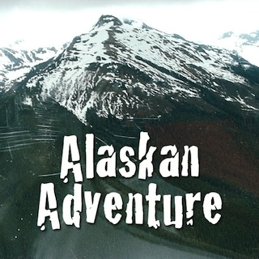
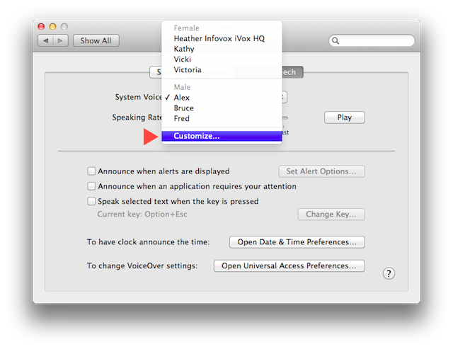
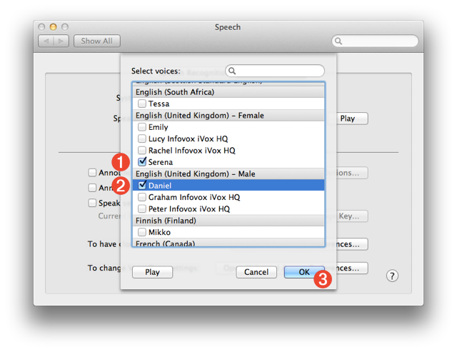

Add Rendered Narration Tracks to Podcasts
Use Automator and the built-in speech technology of OS X to add realistic rendered narration tracks to your GarageBand slideshow podcasts.

IMPORTANT: GarageBand version 10 no longer supports podcasts. Use GarageBand version 6.0.5 or earlier.
One of the challenges in creating slideshow podcasts is recording the narration track that accompanies the display of images.
Traditionally, the process of recording a usable narration track requires the use of a quality microphone in a quiet environment in order to get a recording free of background noise and distractions. In addition, speaking the narration clearly and accurately is difficult for many people not trained in broadcast techniques, and may end up taking a lot of time and effort to get a usable narration track.
An alternative approach is to use the built-in text-to-speech abilities of OS X and Automator to render written phrases into spoken audio clips that are combined to become the narration of your slideshow. This technique requires no special equipment or environment and delivers a high-quality narration in a shorter amount of time.
In this workshop you will learn how to create and install the Automator-based OS X Services for turning text into spoken audio clips.
DO THIS ►Before you continue, take 3 1/2 minutes to watch the completed example podcast. To view the podcast embedded in this webpage, click or tap the Alaskan Adventure image above, or view a larger version, displayed in its own window.
The Workshop Session Kit provided here contains everything you'll need to create the finished GarageBand podcast. Specifically, the kit contains the following items:
- The GarageBand slideshow podcast project template containing sound markers as placeholders for the narration clips to be created and added.
- A text file containing the narration dialog for two narrators, one male, one female.
- A folder containing Automator service workflow files.
DO THIS ►DOWNLOAD (65 MB) and unpack the workshop session kit archive. You’ll use its contents in this workshop.
This workshop demonstrates how to use the built-in speech technology of OS X to convert written statements, into spoken audio clips that are added to a GarageBand project as narration tracks. With a project as this, the quality and style of the computer voice is essential to producing a realistic listenable podcast.
OS X Lion includes many new high-quality male and female voices, available in multiple languages, that are perfect for narration. So the first step in this workshop is to choose and install two of these voices.
DO THIS ►On your computer, open the System Preferences application by selecting the “System Preferences…” menu option from the Apple menu. Once the application is open, navigate to the Speech preference pane by selecting “Speech” from its “View” menu.
DO THIS ►In the Speech preference pane, select the “Text to Speech” tab, and then select the “Customize…” menu option from the “System Voice” popup menu (see below)

Once the menu item is selected, a drop-down sheet appears, displaying a list of high-quality voices, that can be installed on your system (see below). These male and female voices are available in multiple languages and can be sampled by selecting a voice and clicking the “Play” button in the sheet window.

This tutorial uses two of the UK English voices: Serena 1 , and Daniel 2 .
DO THIS ►Select the checkbox next to these voices, click the “OK” button 3 , and follow the forthcoming instructions to complete the installation.